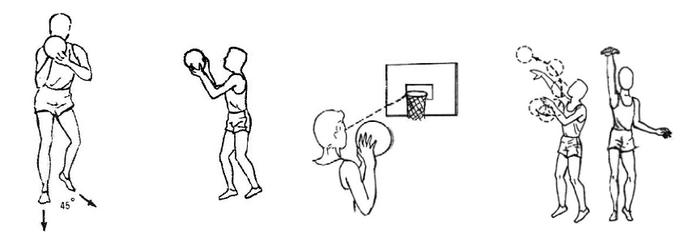
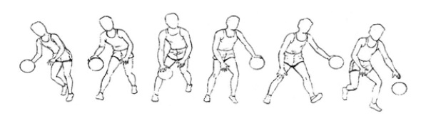
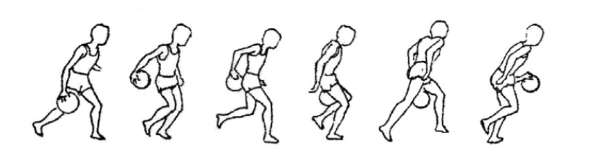
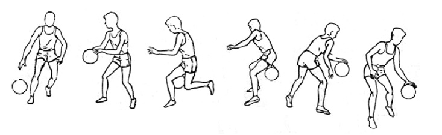
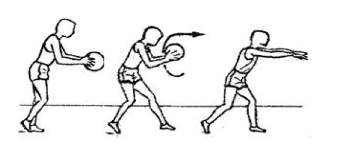
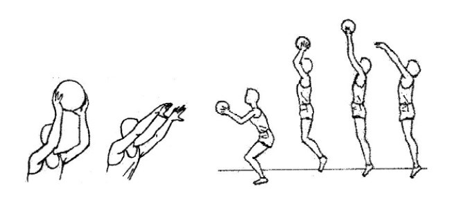
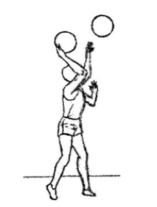
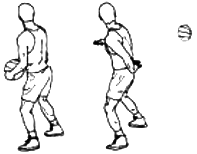
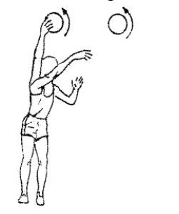

Toma del Balón
El balón debe ser tomado con ambas manos, apoyando solo los dedos, no las palmas de las manos, para lograr un mayor dominio. Las manos no van a los costados, sí colocamos las manos a los costados, con un golpe en la pelota nos la quitarán fácilmente.
El tiro
El tiro se realiza con una mano, la otra mano solo sostiene la pelota en la posición correcta. La pelota debe descansar sobre la mano y el codo debe apuntar hacia delante. Se usa todo el cuerpo para lanzar, es decir que hay que flexionar rodillas, caderas y quedar algo inclinados hacia delante previo al tiro. Esto permitirá que cuando lance, empuje no solo con el brazo, sino también con las piernas.

El drible
El drible se realiza empujando la pelota hacia el piso con los dedos, flexionando y extendiendo el brazo con soltura, sin rigideces y mirando hacia delante. Se pica la pelota a un costado del cuerpo y no adelante, para evitar golpearla con las piernas.
Hay dos tipos de drible, uno “de velocidad”, que es cuando driblamos sin marca y en el que vamos un poco más erguidos. Otro es el drible “de protección”, que es cuando estamos marcados.
Cambios de mano
Para eludir a un contrario cuando vamos driblando, se usan cambios de dirección, y para proteger la pelota tenemos que realizar cambios de mano, para picarla con la mano más alejada del marcador.
- Cambios de mano por delante: Este es el más sencillo, cuando quiero cambiar de dirección tengo que cambiar de modo por delante de mi cuerpo. Para eso llevo la pelota hacia el otro lado y comienzo a picar con la otra mano.

- Cambio de mano por faja: En este caso el cambio se hace por detrás del cuerpo con el objeto de proteger más la pelota.

- Cambio de mano con reversible: En este caso la protección es similar que en el cambio con faja, pero le damos la espalda al contrario. Todo el giro se realiza con la misma mano con la que vengo picando.

- Cambio de mano entre las piernas: En este caso se pica el balón entre las piernas, se dirige ligeramente hacia la parte posterior del cuerpo. El pique deberá ser bajo y rápido, luego se recoge el balón con la otra mano y continúa el pique con el balón junto al pie.
Tipos de Pase
Hay diferentes maneras de realizar un pase en basquetbol.
- Pase de pecho: El pase más característico de basquetbol. Es el que más se utiliza tanto en corta como media distancia. Se toma el balón con ambas manos a la altura del pecho con los codos levemente separados del cuerpo. Las manos deben sostener la pelota de tal manera que los pulgares queden mirándose. Desde esta posición, extendemos con fuerza brazos y muñecas para empujar el balón. En la parte final del movimiento, la yema de los dedos contribuye a expulsar la pelota. Es de suma importancia que el cuerpo esté orientado hacia dónde queremos realizar el pase.

- Pase de pecho con pique: Es básicamente la misma técnica que el pase de pecho salvo que el balón rebota en el suelo antes de llegar al receptor. Por lo tanto, al dar el pase, los brazos y las manos deben apuntar hacia abajo de manera diagonal.
Esta variante se utiliza en las mismas situaciones que el pase de pecho. Si bien la distancia entre pasador y receptor suele ser más corta, la trayectoria está obstruida por un defensor con los brazos arriba.
- Pase sobre cabeza: Se toma el balón con ambas manos por encima de la cabeza en un plano atrasado con respecto a los codos y cabeza para facilitar la impulsión. Después mediante una extensión completa de codos y muñecas se lanza el balón hacia delante con las manos apuntando al receptor y dando un paso hacia delante.

- Pase béisbol: Consiste en sujetar el balón con ambas manos por encima del hombro correspondiente a la mano que va a dar el pase. Esa mano sostiene la pelota desde atrás mientras que la otra sujeta desde adelante. Al realizar el pase extendemos fuertemente el brazo hacia delante y terminamos de soltar el balón con un golpe de muñeca.

- Pase por detrás de la espalda: Se pasa el balón por detrás de la espalda en un movimiento rápido con la mano contraria al lugar en el que se encuentra el compañero que va a recibirla.

- Pase de gancho: Girando ligeramente el hombro opuesto del balón hacia nuestro compañero y siempre en la dirección del pase impulsamos la mano levemente hacia atrás en la misma línea que nuestro hombro. Es importante tener en cuenta que el balón se controla con todos los dedos de la mano con la que se lanza. Para finalizar el pase, debemos realizar un movimiento circular con la mano y el balón sobre la cabeza en la dirección deseada, mientras el pie trasero acompaña el balón con un paso hacia adelante.
